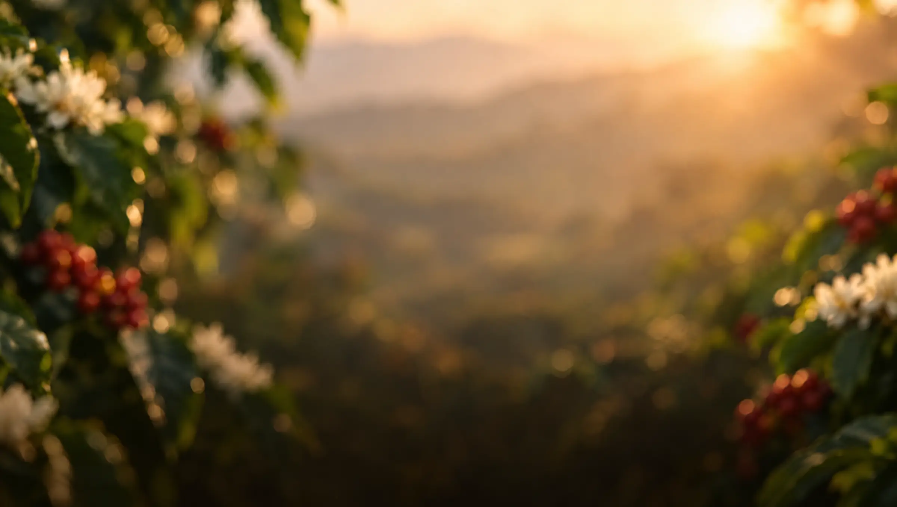
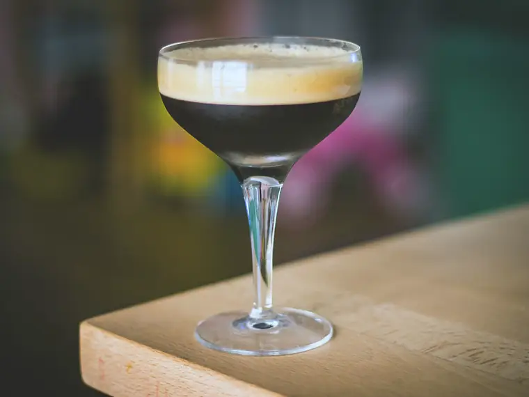

Medellín · Sector Estadio
Ven por el café. Quédate por la conexión.
Café de especialidad, cocina para compartir y una barra para brindar, en la Calle 49 del sector Estadio.
Lo que hay
Todo pasa alrededor de una mesa.
Del primer café al último brindis, aquí la gente se encuentra.
-
El café
Espresso y cinco métodos manuales: V60, Chemex, Origami, prensa francesa y sifón japonés.
-
La cocina
Brunch, hamburguesas, pizzas personales, pastas y entradas para compartir.
-
El horno (se abre el menú en otra pestaña)
Empanadas, pasteles, tortas y rollos de canela.
-
La barra
Cócteles, café con licor, vino, sangría y cerveza.
Talleres
Próximos talleres en Conexión.
Cupos limitados. Reserva el tuyo por WhatsApp.
El café
Cinco maneras de preparar tu café.
Métodos manuales para compartir: cada uno sale para 2 tazas.
Favoritos de la casa
Para pedir la primera vez.
Lo que la casa recomienda si es tu primera visita.



Nosotros
Lo que te prometemos.
- Si vienes seguido, te vamos a saber el nombre.
- Nunca te vamos a apurar la mesa.
- Vas a saber qué estás pidiendo antes de pedirlo.
- No tienes que creer en nada para que te traten bien.
¿Nos vemos en Conexión?
Escríbenos por WhatsApp. Te esperamos.